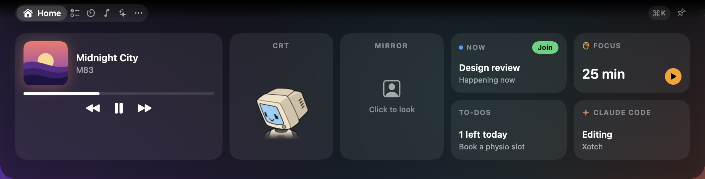
The notch that does the work
Xotch turns your Mac's notch into an AI that acts with your permission, dictation that never leaves your Mac, and your whole day, one hover away.
Press ⌘⇧Space in any app and ask. It can move your day around, but only after you click Allow. Hold fn and talk; the words land where you're typing. To-dos, calendar, focus and music sit one hover away, and a small fox keeps an eye on your pointer meet it.
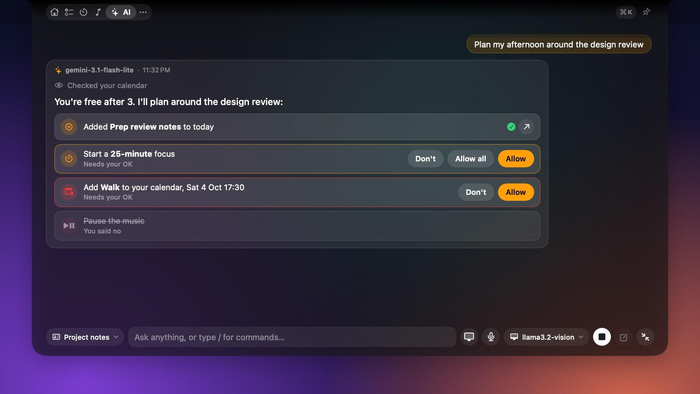
An assistant at the top of the screen, not in another tab
Works with Claude, GPT, Gemini, Groq and OpenRouter, or a model on your own Mac through Ollama or LM Studio.
- It looks at your calendar, to-dos, timer, notes and what's playing, then adds a to-do, starts a focus session, writes a note or books an event.
- Nothing changes until you click Allow. Each action shows as a card first, and most can be undone from the card afterwards.
- Shortcuts skip the model:
/todo,/timer 25m,/focus,/note,/play.
Answers you can use straight away
Code comes highlighted with a copy button, and the chat grows when an answer needs room. Attach a screenshot and ask about it. Chats stay on your Mac, and the AI only sees what you choose to share.
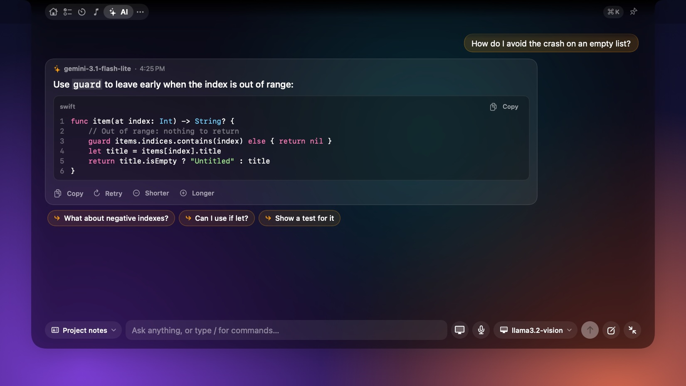
Hold fn. Speak. Let go.
The words appear where you're typing, in any app, tidied up. Speech becomes text on your Mac with Whistle from Cactus Compute: a 17 MB model that turns five seconds of speech into text in about 30 ms.
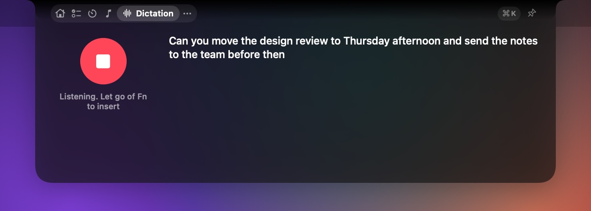
Open, and closed: while you talk, the ears beside the camera show it's listening.
- Hands-free
- Double-tap fn to keep listening. Esc cancels.
- Tidied up
- "Um"s and repeats dropped, capitals fixed. Your AI can polish the grammar too.
- Your words
- Teach it names and jargon. English, German, French, Spanish, Italian, Dutch and Polish.
- Never kept
- Your voice isn't saved or sent. Password fields are refused, and your clipboard is put back.
The things you reach for fifty times a day
Home puts the essentials on one screen. Everything else is a tab away, and each module can be switched off or reordered.
To-dos
Today and someday. Unfinished ones carry over instead of disappearing.
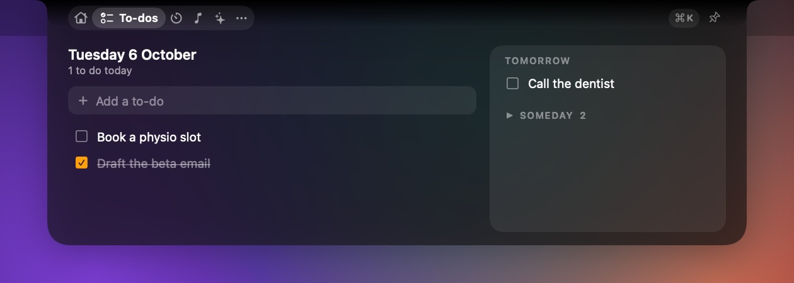
Calendar
The next seven days, one-click Join for Zoom, Meet and Teams, and reminders.
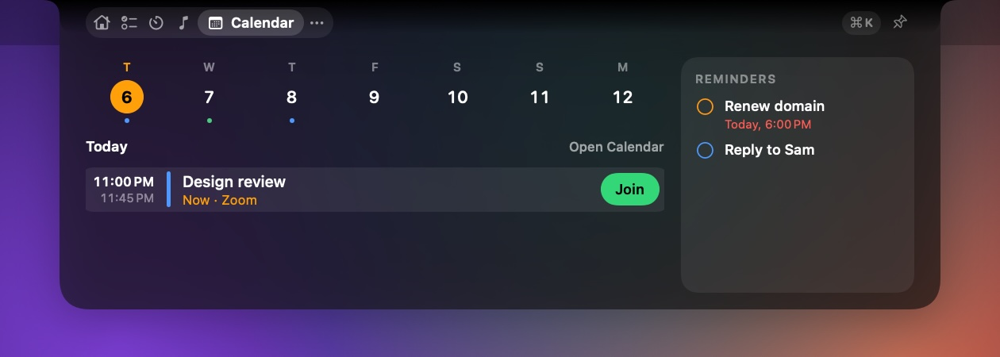
Focus and timers
Focus sessions with breaks, countdowns, and a stopwatch with laps.
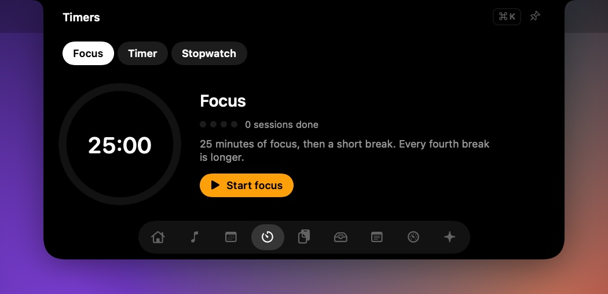
Now Playing
Music, Spotify or any app playing audio, with bars that follow the real sound.
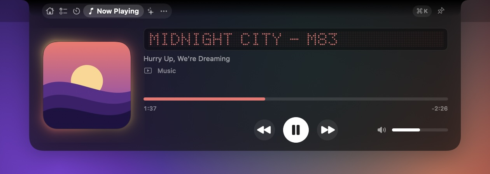
Capture
Screenshots and screen recordings, landing on a shelf ready to drag.
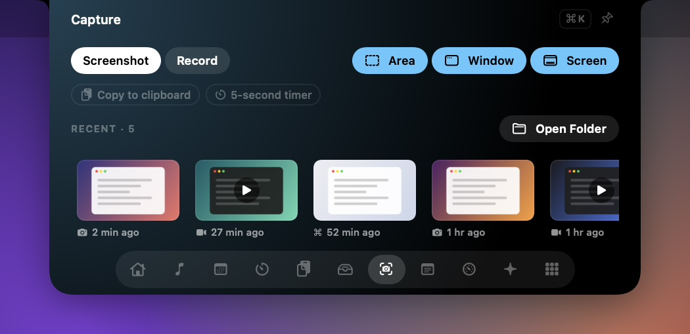
Claude Code
What it's doing right now, beside the camera, and today's usage from the logs on your Mac.
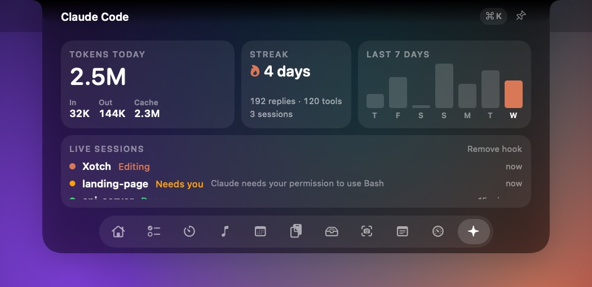
Clipboard
Everything you've copied, searchable and pinnable. Passwords are skipped.
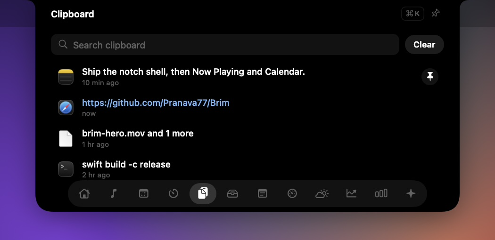
Shelf
Drop files on the notch to keep them handy. Drag them out, or AirDrop them.
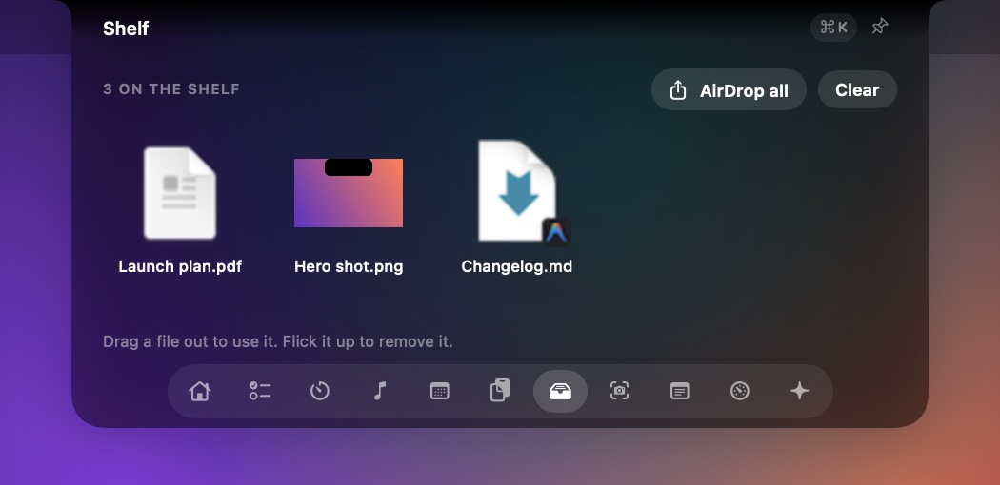
Stats
Processor, memory, battery and network at a glance.
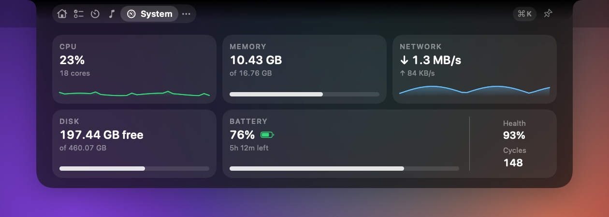
While it's closed, the ears take turns
Anything live shows beside the camera. When several things are live, they share the space, and volume and brightness get their own HUD.
A little character, and a look that's yours
A page mascot sits in the ear and on Home. It turns to watch your pointer, breathes while it waits, and reacts when you click it. Here are all twelve. Click one.
- One shortcut for everything
- Press ⌘K and type:
10 minstarts a timer,shottakes a screenshot, anything else becomes a to-do. - A mirror, when you want one
- A tile on Home shows you through the camera, flipped, for a look before a call. It starts only when you click it, so the camera light never comes on just because the notch opened.
- macOS's own dark look
- The open notch uses the same dark material as Control Center, and the closed notch stays black to match the camera. Themes of Xotch's own come later.
Clear about what leaves your Mac, and light on it
No account, no analytics, no telemetry. Everything else is your choice, and it's written down.
- CPU with the notch closed and three live activities taking turns
- ~0.3%
- memory with the notch closed, on two displays
- 29 MB
- to transcribe five seconds of speech, on the Mac
- ~30 ms
- CPU from the speech engine while idle; it quits after two quiet minutes
- 0%
Stays on your Mac
- Dictation. Your voice is turned into text on the Mac and never saved or sent.
- Local AI. With Ollama or LM Studio, chats never leave the machine.
- Your data. To-dos, notes, clipboard history, chats and captures live in one folder.
- API keys are kept in the Keychain.
Leaves, only when you choose
- Cloud AI. Your messages, the context you picked, any screenshot you attach, and what the AI looks up go to the provider you chose. Clipboard and notes go only after you click Allow.
- Optional polish. If you turn it on, dictated text goes to your AI to fix the grammar.
- One download. The 17 MB speech model, from Hugging Face, once.
- Permissions are asked for when a feature needs them: Accessibility for the fn key and HUDs, Microphone, Calendar, Screen Recording.
Measured with top, sample and footprint on an M5 Pro, and written up in the project's performance notes.
Good to know
Does it work without a notch?
Yes. On a Mac or display without one, Xotch draws a notch at the top of the screen, and it can run on every display at once.
Do I need an AI subscription?
No. Bring a key for Claude, OpenAI, Gemini, Groq or OpenRouter, or run a free model on your own Mac with Ollama or LM Studio. The rest of Xotch, dictation included, works without any AI.
Can the AI do things without asking?
It can look things up for you, like your agenda or today's to-dos. Anything that changes something, or shares your clipboard or notes, waits on a card until you click Allow, and most changes can be undone.
Which Macs can dictate?
Dictation needs Apple silicon and macOS 26, because that's where the Whistle engine runs. Everything else works on macOS 14 or later, on Apple silicon or Intel.
Why does macOS warn me when I open it?
Beta builds aren't signed with a Developer ID yet, so macOS asks you to allow Xotch once in Privacy & Security, and each new beta build asks for its permissions again. Signing and notarisation come before the public release.
Will it slow my Mac down?
With the notch closed it uses about 0.3% of the processor and 29 MB of memory. The speech engine runs only while you dictate and quits after two quiet minutes.
Try it before it ships
Xotch is in private beta while it's signed and notarised. Testers get the build, the changelog, and a direct line for anything that breaks.
Ask for an invite- Unzip the build from your invite and drag Xotch to Applications.
- Open it. If macOS says it can't check the app, choose Open Anyway in System Settings › Privacy & Security.
- Move the pointer to the notch. Xotch lives in the menu bar and has no Dock icon.
Needs macOS 14 Sonoma or later, on Apple silicon or Intel. Dictation needs Apple silicon and macOS 26; screen recording needs macOS 15; Liquid Glass needs macOS 26.